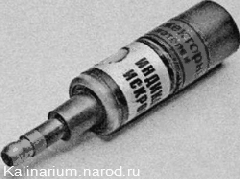
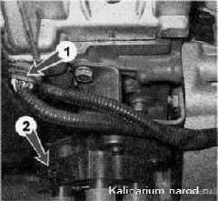
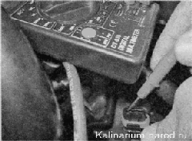
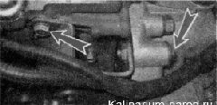
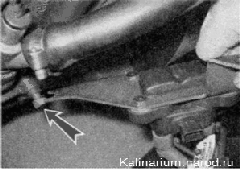
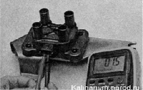
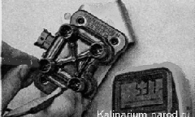
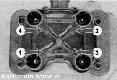

Катушка зажигания двигателя 1,6i - проверка и заменаСовет Для оперативной проверки исправности системы зажигания можно использовать искровой индикатор для двигателей с впрыском топлива. Его надевают на свечу зажигания и подсоединяют к нему высоковольтный провод. При проверке необходимо руководствоваться инструкцией, прилагаемой к прибору. Для выполнения работы потребуется мультиметр (в режиме вольтметра и омметра). Последовательность выполнения 1. Подготавливаем автомобиль к выполнению работы , выключаем зажигание. 2. Освободив фиксатор, отсоединяем колодку жгута проводов 1 от выводов модуля зажигания 2. 3. Включив зажигание, вольтметром измеряем напряжение между выводом 15 и «массой» колодки жгута проводов. Напряжение должно быть не меньше 12 В. Если напряжение не поступает на колодку или оно меньше 12 В.значит, разряжена аккумуляторная батарея, неисправна цепь питания или неисправен ЭБУ. Выполнив измерения, выключите зажигание. 4. Отсоединяем высоковольтные провода от свечей зажигания. 5. Торцовым ключом па 13 мм отворачиваем два болта верхнего крепления кронштейна катушки зажигания. 6. Ключом на 17 мм ослабив затяжку нижнего болта крепления кронштейна катушки зажигания, снимаем кронштейн вместе с катушкой. 7. Отсоединяем высоковольтные провода от катушки зажигания. 8. Омметром измеряем электрическое сопротивление между центральным выводом 15 и корпусом (кронштейном). Прибор должен показывать отсутствие короткого замыкания первичной обмотки катушки на «массу». Последовательно измеряем электрическое сопротивление между центральным выводом 15 и крайними выводами — 1а и 1Ь. Сопротивление каждой из первичных обмоток катушки должно быть около 0,5 Ом. При измерении малых величин электрического сопротивления (около Юм) необходимо учитывать внутреннее сопротивление прибора, которое можно определить, замкнув щупы омметра. 9. Омметром измеряем сопротивление между высоковольтными выводами катушки 1 и 4, а затем 2 и 3. Сопротивление обмоток должно быть около 5,4 кОм. Неисправную катушку зажигания необходимо заменить. 10. Шестигранным ключом на 5 мм отворачиваем четыре винта крепления катушки к кронштейну и снимаем катушку. 11. Устанавливаем катушку зажигания в последовательности, обратной снятию. Высоковольтные провода подсоединяем в соответствии с номерами цилиндров, нанесенными на каждом проводе и на корпусе модуля рядом с выводами. Совет Так как нумерация выводов на катушке, установленной на двигатель, не видна, подсоединять высоковольтные провода к выводам катушки зажигания лучше до установки ее на двигатель. |